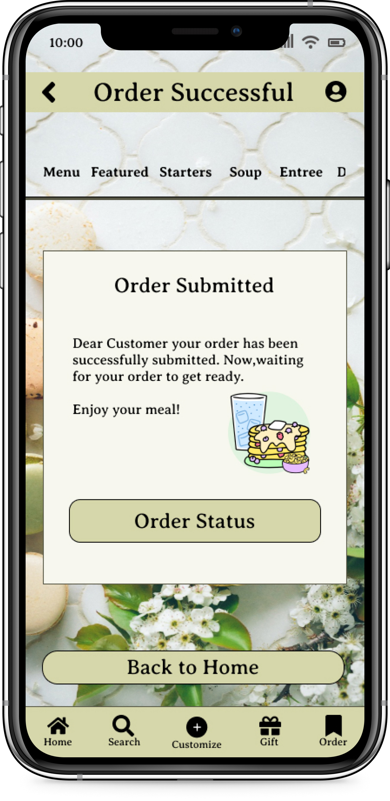

Take Out App
Project duration
April 2023 to August 2023


The Product
Introducing the Take Out App, a convenient way to order food from anywhere that provides an accurate portion that would satisfy customer needs. It strives to deliver healthy food. They offer various options for food with calories count. Our target customers are every individual who prefer healthy food with healthy lifestyle. This innovative app allows users to browse a full description of menu items, customize ingredients, and select a preferred time for delivery or takeout. Say goodbye to long wait times and enjoy delicious food on your own schedule with the Take Out App.

The Problem
Globally 17% of food worldwide is wasted at the consumer level and despite having online food apps, users often struggle to determine appropriate portion sizes when ordering, which contribute to food waste.
My Role
UX designer designing app for restaurant that is effortless and enjoyable for users.
The Goal
Design an online food app to support global cause in solving food waste.
My Responsibility
Conducting interviews, paper and digital wireframing, low and high-fidelity prototyping, conducting usability studies, accounting for accessibility, and iterating on designs.
User Research Summary
I conducted interviews and created empathy maps to understand the users I’m designing for and their needs. A primary user group identified through research was busy working adults who doesn’t have fixed time to prepare or eat meals.This user group confirmed initial assumptions about customers, but through this research we also found that user were facing challenges in determining portion sizes when buying groceries. Many users struggle to estimate their consumption accurately, leading to either food waste or frequent trips to the market.Due to the lack of culinary skills most of the food go to waste even when ordering online. Other user problems included time consumption, interests, or busy schedule that make it difficult to get groceries for cooking or go to restaurants in-person. Moreover, 90% of our users with whom we conducted research expressed frustration with inconsistent portion sizes when ordering food online, leading to either dissatisfaction or food wastage, resulting in regret.Overall, these insights underscore the importance of addressing the specific needs and challenges of busy working adults in the design of our takeout app.
User Research Pain Points
1
Time
Users are too busy to spend time on meal prep
2
Accessibility
Platforms for ordering food are not equipped with assistive technologies
3
Lack of information
No portion size mentioned
User Persona
Problem statement:Ryan, a work-from-home adult, struggles to find time for cooking due to his busy schedule. Despite his intentions to cook, something always comes up resulting in wasted groceries.
Ryan William
Age:24
Education: Graduated
Hometown: Richmond
Family: Lives with father
Occupation: Software Engineer
“I work from home exploring new foods ”
Goals
- To have healthy and more quantity food at affordable price
- To eat whenever craving some food
Frustations
- Asking personal information because I am just there to order food
- Cannot navigate my order status
Ryan is a 24 year old software engineer who works from home. He normally makes food at home because he thinks he could make anything at a more quantity for a more reasonable price. But when he orders food online he can’t navigate properly and ask too much personal question.
User Journey Map
RyanGoal: Exploring new foods at very reasonable price with more quantity
Ryan’s user journey revealed how helpful it would be for users to have access to a dedicated restaurant app.
| Action | Select Restaurant | Browse Menu | Place Order | Complete Order | Pick-up Order |
|---|---|---|---|---|---|
| Task List |
|
|
|
|
|
| Emotions |
|
|
|
|
|
| Improvement Opportunites | Creating an app | Provide search filters with appetizing images of every dish | Asking few personal information | Provide option to tip in app | Provide notification to review about the food including rewards program |
Paper Wireframes
Taking the time to draft iterations of each screen of the app on paper ensured that the elements that made it to digital wireframes would be well-suited to address user pain points. For home screen, I prioritized a quick and easy ordering process to help users save time.

Digital Wireframes
As the initial design phase continued, I made sure to base screen designs on feedback and findings from the user research.

Low-fidelity Prototype
The low fidelity prototype connected the primary user flow of scheduling time and ordering food, so the prototype could be used in a usability study with users.
View the Take out app

Usability Study: Round 1 Finding
conducted two rounds of usability studies. Findings from the first study helped guide the designs from wireframes to mockups. The second study used a high-fidelity prototype and revealed what aspects of the mockups needed refining.
1
80% users wanted to browse menu rather than directly ordering
2
40% users was curious about past order
3
All users wanted order status
Usability Study: Round 2 Finding
1
95% of users didn't like how the customize button were focused on the first page only
2
All users mentioned there was no accessibility
3
60% users were unable to easily schedule time
Mockups
Before Usability Study
After Usability Study
Early design provided order now button right in the middle, but after usability studies, I put the button on bottom down right. I changed my icon so that my focus would be on I also revised the design to users see the whole menu and explore before starting the order.
After the usability study I included label and view cart option for users.
Before Usability Study
After Usability Study
Before Usability Study

After Usability Study
The third usability study revealed frustration with no order status option after the order was successful. To streamline this flow, I added order status and back to home at same page.
Our main focus was on to count the calories of each individual and recommend items based on it. Users really enjoyed the new feature and was very excited for it.
Before Usability Study

After Usability Study
High-fidelity Prototype
The final high-fidelity prototype presented cleaner user flows for take out app and checkout. It also provide estimated time for the order and constant update.
View the Take Out App

Accessibility Consideration
1
Provided access to users who are vision impaired through adding alt text to images for screen readers
2
Used icons to help make navigation easier
3
Used a profile icon with just sign in/out and create new account page or guest account
Takeaways
Impact
The app makes users feel like the local restaurant really thinks about how to meet their needs.
One quote from peer feedback: “The app looked more soothing to the eyes and made me browse menu before directly jumping on ordering. It also gave customers favorite option and past order so that it’s easy for me to order again. I would definitely use this app as a go-to for a delicious and healthy meal.”
What I learned
While designing the Take out app, I learned that the first ideas for the app are only the beginning of the process. Usability studies and peer feedback influenced each iteration of the app’s designs